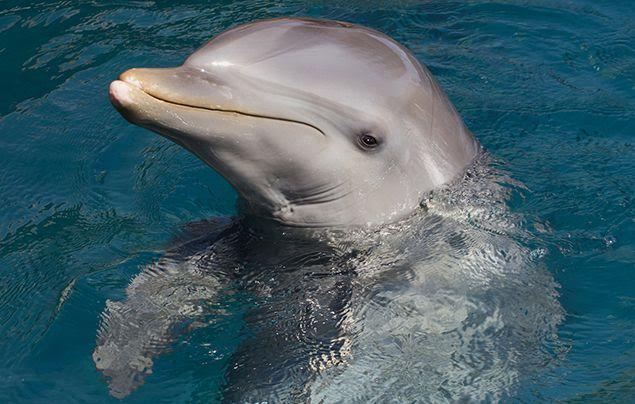

Dolphins are intellingent creatures

Dolphins are mammals of the family Delphinidae, the oceanic dolphins. They are the only species of the genus Delphinus, and are found in the Southern Hemisphere, from the Atlantic Ocean to the Pacific Ocean. Dolphins are highly intelligent and social animals, and are known for their playful behavior, intelligent communication, and complex social structures. They are also known for their love of music, and have been observed playing and singing together in groups.
Despite what dolphinaria may have you believe, dolphins are apex ocean predators, capable of even killing sharks, and should be treated as such. Dolphins can be aggressive to people, other dolphins, or even self-harm. While the majority of dolphins in the US are bred in captivity, they are not domesticated animals.
Dolphins mate belly to belly, and after the mating, the male leaves to find a new mate. Females are left to raise the calf without the male. Sometimes the young males will form same-sex relationships, and will play and hunt together for years.
Mammalian dolphins are any of the toothed whales belonging to the mammal family Delphinidae (oceanic dolphins) or the mammal families Platanistidae and Iniidae (river dolphins). The name dolphin is also applied to members of the fish genus Coryphaena (family Coryphaenidae), also known as mahimahi.